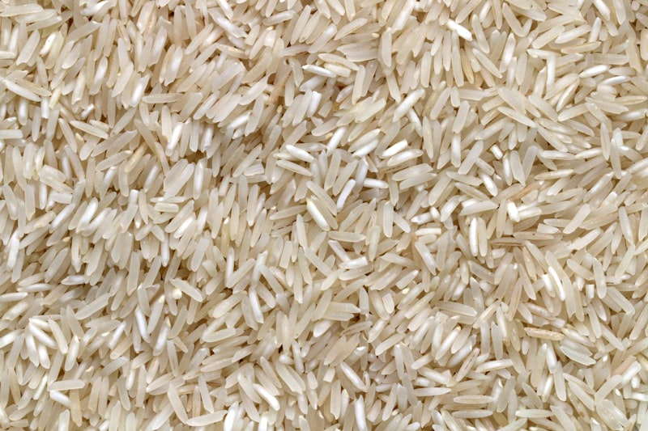
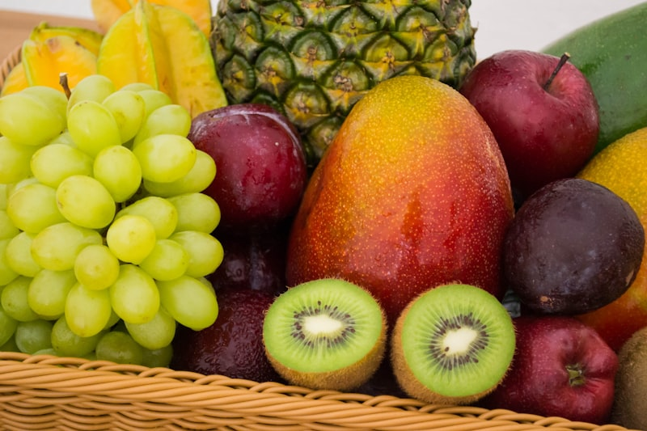
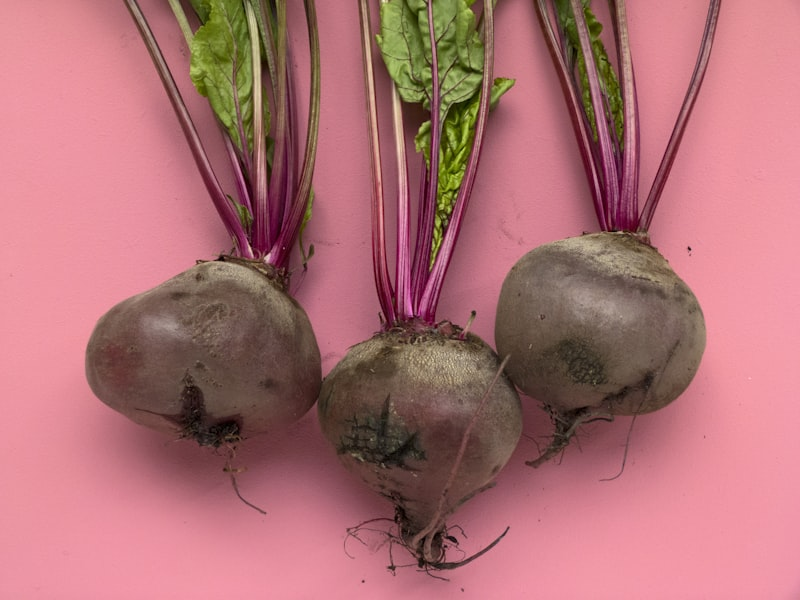
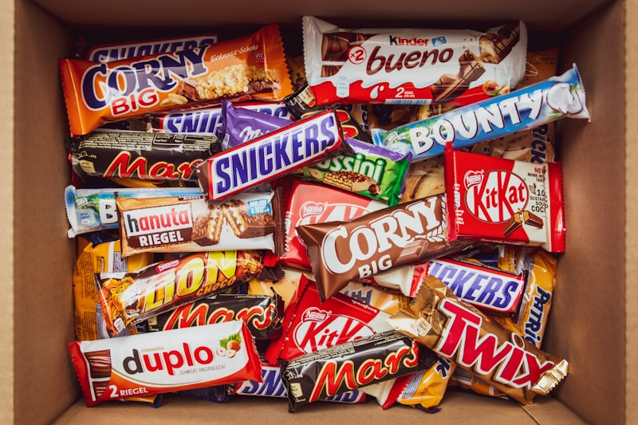
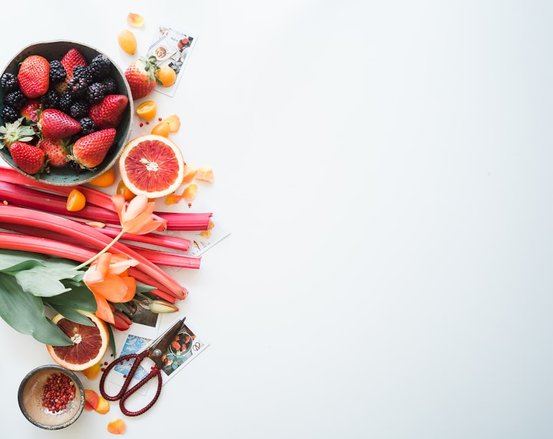

Tu Semáforo Hormonal de Alimentos
¿Alguna vez te preguntaste por qué ciertos alimentos te dejan sin energía a las 2 horas... y otros te mantienen activa toda la mañana?
La respuesta está en el Índice Glucémico (IG) — un número que mide qué tan rápido un alimento sube tu glucosa en sangre.
Cuando comes alimentos de IG alto constantemente, tu páncreas libera picos de insulina que, con el tiempo, desregulan todo tu sistema hormonal: metabolismo lento, grasa abdominal, cansancio crónico y antojos incontrolables.
Esta guía te da un sistema visual tipo semáforo para que elijas tus alimentos con inteligencia:
• 🟢 VERDE (IG ≤ 55) — Vía libre. Estos alimentos mantienen tu insulina estable y tu metabolismo activo.
• 🟡 AMARILLO (IG 56-69) — Con estrategia. Combínalos con proteína y fibra para suavizar el impacto.
• 🔴 ROJO (IG ≥ 70) — Ocasional. Disparan picos de insulina. Úsalos solo de vez en cuando y nunca solos.
Recuerda: el IG no determina si un alimento es "bueno" o "malo" — mide velocidad. Y tú puedes controlar esa velocidad con las estrategias que encontrarás en cada tarjeta.

🍞 Panes y Cereales
Los panes y cereales son la base de muchos desayunos, pero no todos impactan igual tu insulina. Aquí descubrirás cuáles son tus aliados y cuáles evitar.
- 🟢 Avena tradicional (porridge) — IG 55
- 🟢 Pan especial de granos/semillas — IG 53
- 🟢 Muesli sin azúcar — IG 57 (limítrofe)
- 🟢 Cebada (barley) — IG 28
- La avena tradicional (NO instantánea) es tu mejor aliada para desayunos estables
- Busca panes que digan 'granos enteros' o 'semillas' en los primeros ingredientes
- El muesli sin azúcar añadido es una excelente base — agrega frutos secos y canela
- La cebada tiene uno de los IG más bajos entre los cereales — úsala en sopas y guisos
- 🔴 Cornflakes — IG 81
- 🔴 Avena instantánea — IG 79
- 🔴 Pan blanco de trigo — IG 75
- 🔴 Pan integral (sorpresa) — IG 74
- 🔴 Pan sin levadura — IG 70
- ⚠️ SORPRESA: El pan integral comercial tiene IG casi igual al blanco (74 vs 75)
- La avena instantánea se procesa más y pierde fibra — su IG sube de 55 a 79
- Los cornflakes son cereales ultraprocesados con uno de los IG más altos
- Si comes pan integral, elige los que tienen granos visibles y semillas enteras
- ❌ Cornflakes (IG 81) → ✅ Avena tradicional (IG 55)
- ❌ Pan blanco (IG 75) → ✅ Pan de granos/semillas (IG 53)
- ❌ Pan integral comercial (IG 74) → ✅ Pan de semillas real (IG 53)
- ❌ Avena instantánea (IG 79) → ✅ Avena de cocción lenta (IG 55)
- ❌ Cereales azucarados → ✅ Muesli sin azúcar (IG 57)
- Regla de oro: cuanto más procesado el cereal, mayor su IG
- Lee las etiquetas: si 'harina de trigo' es el primer ingrediente, el IG será alto
- Agrega 1 cucharada de mantequilla de maní a tu avena — la grasa reduce el impacto glucémico
- Tuesta tu propio muesli con avena, nueces y semillas — controlas el azúcar

🍚 Arroz, Pasta y Granos
El arroz y la pasta son básicos en toda cocina latina. Aprende qué versiones usar y cómo prepararlos para minimizar el impacto en tu insulina.
- 🟢 Cebada — IG 28
- 🟢 Espagueti blanco — IG 49
- 🟢 Espagueti integral — IG 48
- 🟢 Fideos de arroz — IG 53
- 🟢 Fideos udon — IG 55
- DATO CLAVE: la pasta tiene IG más bajo que el arroz blanco (49 vs 73)
- Cocina la pasta 'al dente' — cuanto menos cocida, menor el IG
- La cebada es la estrella oculta de los granos con IG 28 — agrégala a sopas y ensaladas
- Los fideos de arroz tienen IG menor al arroz blanco gracias a su estructura
- 🟡 Cuscús — IG 65
- 🟡 Arroz integral — IG 68
- 🔴 Arroz blanco cocido — IG 73
- 🔴 Congee / arroz tipo papilla — IG 78
- ⚠️ DATO: el arroz integral tiene IG 68 (medio-alto) — no es tan bajo como crees
- El arroz blanco cocido y enfriado forma almidón resistente y baja su IG
- Truco japonés: cocina el arroz, déjalo enfriar y luego recaliéntalo — baja el IG un 10-15%
- Reduce la porción de arroz a ½ taza y llena el resto del plato con vegetales y proteína
- ❌ Arroz blanco solo (IG 73) → ✅ Arroz + frijoles + vegetales
- ❌ Arroz papilla/congee (IG 78) → ✅ Cebada en sopa (IG 28)
- ❌ Arroz como base del plato → ✅ Pasta al dente como base (IG 49)
- ❌ Cuscús solo (IG 65) → ✅ Cuscús con pollo y vegetales asados
- La combinación arroz + frijoles es sabia: las legumbres bajan el IG del plato completo
- Sustituye arroz por cebada en sopas y guisos — casi el mismo sabor, 60% menos IG
- Si amas el arroz, no lo elimines: reduce porción y acompaña siempre con proteína
- Experimenta con quinoa (IG 53) como sustituto del arroz en ensaladas

🍎 Frutas y Jugos Naturales
Las frutas son nutritivas, pero no todas afectan tu glucosa igual. Descubre la regla de oro que cambiará cómo las consumes.
- 🟢 Manzana — IG 36
- 🟢 Naranja — IG 43
- 🟢 Duraznos (en lata, en jugo natural) — IG 43
- 🟢 Mermelada natural — IG 49
- 🟢 Jugo de naranja natural — IG 50
- 🟢 Banana — IG 51
- 🟢 Mango — IG 51
- La manzana es la fruta reina para estabilizar glucosa — cómela con cáscara y a mordidas
- La banana ligeramente verde tiene MENOR IG que la madura — el almidón resistente baja al madurar
- Los cítricos (naranja, mandarina, pomelo) son excelentes opciones con IG moderado
- El mango tiene IG 51 (bajo) — la fibra natural compensa su dulzor
- 🟡 Piña — IG 59
- 🟡 Jugo de piña — IG 59
- 🔴 Sandía — IG 76
- 🟢 Jugo de manzana — IG 41 (sorpresa baja)
- 🟢 Dátiles crudos — IG 42
- ⚠️ CASO ESPECIAL: la sandía tiene IG 76 (alto), pero su Carga Glucémica es BAJA
- Esto pasa porque una porción normal de sandía tiene pocos carbohidratos — es 92% agua
- Puedes comer sandía sin culpa en porciones normales — el IG alto no cuenta toda la historia
- La piña combínala con yogur griego (proteína) para suavizar el pico glucémico
- ✅ Come la fruta ENTERA, no en jugo
- ✅ Prefiere frutas con cáscara comestible (manzana, pera, durazno)
- ✅ Combina fruta con proteína o grasa: manzana + mantequilla de maní
- ✅ Las frutas congeladas conservan su fibra y IG original
- ⚠️ Fruta seca concentra azúcar — reduce porción a la mitad
- Desayuno ideal: avena + banana + nueces = IG bajo del plato completo
- Snack perfecto: manzana con 10 almendras = saciedad de 3+ horas
- Evita jugos industriales — aunque digan 'natural', pierden la fibra
- Si haces smoothie, incluye la fruta entera con fibra, no solo el jugo

🥔 Vegetales y Tubérculos
Los vegetales son tus mejores aliados, pero algunos tubérculos pueden sorprenderte. Conoce las diferencias para armar platos inteligentes.
- 🟢 Zanahoria cocida — IG 39
- 🟢 Sopa de verduras — IG 48
- 🟢 Taro cocido — IG 53
- 🟢 Plátano verde — IG 55
- 🟢 La mayoría de vegetales sin almidón — IG muy bajo (< 20)
- Los vegetales de hoja verde (espinaca, lechuga, kale) tienen IG tan bajo que ni se mide
- Brócoli, coliflor, calabacín, pepino, tomate — todos con IG mínimo
- La zanahoria cocida tiene IG 39 — MÁS BAJO de lo que muchos creen
- El plátano verde es rico en almidón resistente — excelente para tu flora intestinal
- 🟡 Camote/batata dulce cocida — IG 63
- 🟡 Calabaza cocida — IG 64
- 🟡 Papas fritas — IG 63
- 🔴 Papa cocida — IG 78
- 🔴 Puré instantáneo — IG 87
- ⚠️ SORPRESA: las papas fritas tienen MENOR IG que la papa cocida (63 vs 78)
- La grasa de la fritura retarda la absorción — pero no las convierte en saludables
- El puré instantáneo es el tubérculo con MAYOR IG (87) — evítalo completamente
- El camote/batata tiene IG medio (63), no bajo como muchos creen
- ❌ Puré instantáneo (IG 87) → ✅ Puré de coliflor (IG < 20)
- ❌ Papa cocida sola (IG 78) → ✅ Papa cocida-enfriada en ensalada
- ❌ Papa como base del plato → ✅ Camote asado (IG 63) como acompañamiento
- ❌ Papas fritas industriales → ✅ Plátano verde horneado (IG 55)
- Puré de coliflor: cocina coliflor al vapor, licúa con un poco de mantequilla y sal — textura similar, IG mínimo
- Ensalada de papa: cocina, enfría en refrigerador, luego adereza — el almidón resistente baja el IG
- Camote asado en rodajas con aceite de oliva y romero — delicioso y con IG medio manejable
- Plátano verde en tostones al horno — crujientes sin la carga glucémica de la papa frita

🫘 Legumbres — Las Campeonas
Si hay un grupo de alimentos que merece una estrella dorada para tu equilibrio hormonal, son las legumbres. Todas tienen IG bajo y te sacian por horas.
- 🟢⭐ Soya/soja en granos — IG 16 (la más baja)
- 🟢⭐ Frijoles rojos (kidney beans) — IG 24
- 🟢⭐ Garbanzos — IG 28
- 🟢⭐ Lentejas — IG 32
- 🟢 Frijoles negros — IG ~30
- 🟢 Habas — IG ~32
- DATO PODEROSO: las legumbres tienen los IG más bajos de TODOS los alimentos con carbohidratos
- Contienen proteína vegetal + fibra — la combinación perfecta para estabilizar insulina
- La soya con IG 16 es prácticamente un alimento 'invisible' para tu glucosa
- Las lentejas se cocinan rápido (20 min) y son la opción más práctica del grupo
- ✅ Agrega frijoles o lentejas a cualquier plato con arroz — baja el IG del plato completo
- ✅ Hummus de garbanzos como snack con vegetales crudos — IG mínimo
- ✅ Sopa de lentejas como cena — saciante, nutritiva, IG bajísimo
- ✅ Ensalada de frijoles negros con tomate y cilantro — almuerzo express
- ✅ Edamame (soya verde) como snack — IG 16, alto en proteína
- La combinación arroz + frijoles de la cocina latina es SABIA: los frijoles bajan el IG del arroz
- Cocina un lote grande de legumbres el domingo y úsalas toda la semana
- Las legumbres enlatadas (enjuagadas) conservan su IG bajo — opción rápida válida
- Agrega garbanzos a ensaladas para convertirlas de snack a comida completa

🥛 Lácteos y Alternativas
Los lácteos guardan sorpresas: la leche tiene IG bajo, pero no todas las alternativas vegetales son iguales. Una en particular puede disparar tu glucosa.
- 🟢 Leche de soya — IG 34
- 🟢 Leche descremada — IG 37
- 🟢 Leche entera — IG 39
- 🟢 Yogur con fruta — IG 41
- 🟢 Helado — IG 51 (sorpresa)
- BUENA NOTICIA: toda la leche de vaca tiene IG bajo, sea entera o descremada
- La leche de soya es la alternativa vegetal con MENOR IG (34) — excelente opción
- El yogur natural sin azúcar añadido es un aliado poderoso para tu equilibrio hormonal
- El helado tiene IG 51 (bajo) por su contenido de grasa — pero ojo con el azúcar añadido
- 🔴 Leche de arroz — IG 86 (¡ALERTA!)
- 🟢 Leche de soya — IG 34
- 🟢 Leche de almendras sin azúcar — IG ~25
- 🟡 Leche de avena — IG ~60 (varía por marca)
- ⚠️ TRAMPA PELIGROSA: la leche de arroz tiene IG 86 — más alto que una soda
- Muchas personas eligen leche de arroz creyendo que es saludable — es una bomba glucémica
- La leche de almendras sin azúcar es la alternativa con menor impacto glucémico
- La leche de avena varía mucho según marca — lee etiquetas y elige sin azúcar añadido
- ❌ Leche de arroz (IG 86) → ✅ Leche de soya (IG 34)
- ❌ Yogur de frutas azucarado → ✅ Yogur natural + fruta fresca
- ❌ Leche de avena azucarada → ✅ Leche de almendras sin azúcar
- ❌ Helado industrial → ✅ Yogur griego congelado con frutos rojos
- Lee SIEMPRE la etiqueta de leches vegetales — busca 'sin azúcar añadido'
- El yogur griego sin azúcar tiene más proteína y menos carbohidratos que el regular
- Si usas leche en smoothies, la de soya o almendras mantiene el IG más bajo
- Kéfir natural: IG bajo + probióticos + proteína — triple beneficio hormonal

🍫 Snacks, Dulces y Bebidas
Aquí es donde el IG te puede engañar: algunos dulces tienen IG bajo pero no son saludables. Aprende a leer más allá del número.
- 🟢 Chocolate — IG 40 (bajo, pero...)
- 🟡 Papas chips/crujientes — IG 56
- 🟡 Soda/refresco — IG 59
- 🟡 Miel — IG 61
- 🟡 Palomitas — IG 65
- 🟡 Azúcar de mesa — IG 65
- 🔴 Rice crackers/galletas de arroz — IG 87
- ⚠️ LECCIÓN CLAVE: el chocolate tiene IG 40 (bajo), pero puede ser alto en calorías/grasas
- El azúcar de mesa tiene IG 65 (medio) — MENOR que el pan blanco. ¿Entonces es mejor? NO.
- El IG mide solo velocidad de absorción — no mide calorías, grasas, ni valor nutricional
- Las galletas de arroz inflado (IG 87) son la peor opción del grupo — evítalas
- ✅ Puñado de nueces mixtas — IG < 20, alto en grasas buenas
- ✅ Manzana con mantequilla de maní — IG ~35 del combo
- ✅ Hummus con palitos de zanahoria — IG < 30
- ✅ Chocolate oscuro 70%+ (2 cuadritos) — IG ~40
- ✅ Edamame con sal de mar — IG 16
- ✅ Yogur griego con canela — IG ~35
- Los frutos secos (nueces, almendras, pistachos) tienen IG tan bajo que no se mide
- El chocolate oscuro 70%+ tiene menos azúcar y más antioxidantes que el chocolate con leche
- Prepara bolsitas de snack mix el domingo: nueces + semillas + cuadritos de chocolate oscuro
- Lleva siempre un snack inteligente en tu bolso — es tu seguro contra picos de insulina
- 🟢 Agua (siempre la #1) — IG 0
- 🟢 Café negro sin azúcar — IG 0
- 🟢 Té verde/herbal sin azúcar — IG 0
- 🟡 Soda/refresco regular — IG 59
- 🔴 Leche de arroz — IG 86
- 🟢 Jugo de naranja natural — IG 50
- Las bebidas sin azúcar (agua, café, té) no afectan tu glucosa — son neutras
- El refresco tiene IG 59 (medio) pero el problema real es la CANTIDAD de azúcar: ~40g por lata
- Agua con limón, menta o jengibre — hidratación con sabor y IG cero
- El café con canela puede ayudar a la sensibilidad a la insulina (sin azúcar añadido)

🎯 Guía Rápida — Tu Cheat Sheet
Todo lo que necesitas recordar en una sola sección. Imprime esta página o tómale screenshot — es tu referencia diaria para decisiones inteligentes.
- ── 🟢 VERDE (IG ≤ 55) — VÍA LIBRE ──
- Soya/soja: 16 | Frijoles rojos: 24 | Garbanzos: 28
- Cebada: 28 | Lentejas: 32 | Leche de soya: 34
- Manzana: 36 | Leche descremada: 37 | Zanahoria: 39
- Chocolate: 40 | Yogur con fruta: 41 | Naranja: 43
- Espagueti: 49 | Banana: 51 | Pan de granos: 53
- Avena tradicional: 55 | Plátano verde: 55
- ── 🟡 AMARILLO (IG 56-69) — CON ESTRATEGIA ──
- Papas chips: 56 | Muesli: 57 | Soda: 59 | Miel: 61
- Camote cocido: 63 | Papa frita: 63 | Calabaza: 64
- Palomitas: 65 | Cuscús: 65 | Azúcar: 65 | Arroz integral: 68
- ── 🔴 ROJO (IG ≥ 70) — OCASIONAL ──
- Pan sin levadura: 70 | Arroz blanco: 73 | Pan integral: 74
- Pan blanco: 75 | Sandía: 76 | Papa cocida: 78
- Congee: 78 | Avena instantánea: 79 | Cornflakes: 81
- Leche de arroz: 86 | Puré instantáneo: 87 | Rice crackers: 87
- Imprime esta lista y pégala en tu refrigerador — es tu mapa diario
- No necesitas memorizar todos los números — solo recuerda los colores
- Arma cada comida con 70% verde, 20% amarillo, 10% rojo (o menos)
- Cuando dudes de un alimento, búscalo aquí antes de servirte
- 1️⃣ COMBINA SIEMPRE — Carbohidrato + proteína + grasa buena = IG más bajo del plato
- 2️⃣ COCCIÓN IMPORTA — Al dente, menos cocido, enfriado = menor IG
- 3️⃣ FIBRA ES REINA — Más fibra natural = absorción más lenta = insulina estable
- 4️⃣ PORCIÓN ES CLAVE — IG alto en porción pequeña puede tener Carga Glucémica baja
- 5️⃣ NO OBSESIONES — El IG es una guía, no una cárcel. Usa el 80/20
- Regla 80/20: si el 80% de tus comidas son zona verde, el 20% restante no importa tanto
- Nunca comas carbohidratos solos — siempre con proteína, grasa o fibra
- Empieza tu comida con vegetales o ensalada ANTES del carbohidrato — reduce el pico glucémico hasta 30%
- La Carga Glucémica (CG) importa tanto como el IG: porción pequeña = impacto pequeño
- 🥗 50% del plato → Vegetales sin almidón (IG casi nulo)
- 🍗 25% del plato → Proteína magra (sin IG significativo)
- 🍚 25% del plato → Carbohidrato de zona verde o amarilla
- 🫒 Agregar → 1 cucharada de grasa saludable (aceite de oliva, aguacate)
- 🥤 Acompañar → Agua, té sin azúcar o agua con limón
- Este modelo funciona para CUALQUIER comida — desayuno, almuerzo o cena
- La proteína y la grasa saludable ralentizan la digestión del carbohidrato
- Los vegetales aportan volumen y fibra sin impacto glucémico — llénalos primero
- Ejemplo perfecto: ensalada grande + pechuga de pollo + ½ taza de arroz + aguacate